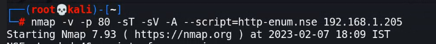

Starting Nmap 7.92 ( https://nmap.org ) at 2023-02-07 06:25 EST
Nmap scan report for 10.38.1.116
Host is up (0.00084s latency).
Not shown: 998 closed tcp ports (reset)
PORT STATE SERVICE VERSION
22/tcp open ssh OpenSSH 5.9p1 Debian 5ubuntu1.10 (Ubuntu Linux; protocol 2.0)
| ssh-hostkey:
| 1024 06:cb:9e:a3:af:f0:10:48:c4:17:93:4a:2c:45:d9:48 (DSA)
| 2048 b7:c5:42:7b:ba:ae:9b:9b:71:90:e7:47:b4:a4:de:5a (RSA)
|_ 256 fa:81:cd:00:2d:52:66:0b:70:fc:b8:40:fa:db:18:30 (ECDSA)
80/tcp open http Apache httpd 2.2.22 ((Ubuntu))
|_http-title: Site doesn't have a title (text/html).
|_http-server-header: Apache/2.2.22 (Ubuntu)
MAC Address: 08:00:27:B5:F8:A0 (Oracle VirtualBox virtual NIC)
Device type: general purpose
Running: Linux 2.6.X|3.X
OS CPE: cpe:/o:linux:linux_kernel:2.6 cpe:/o:linux:linux_kernel:3
OS details: Linux 2.6.32 - 3.5
Network Distance: 1 hop
Service Info: OS: Linux; CPE: cpe:/o:linux:linux_kernel
TRACEROUTE
HOP RTT ADDRESS
1 0.84 ms 10.38.1.116
basic enum script:
